ICTC 지휘통제절차 웹툰 · 시즌 1
9화 「쓰고, 모으고, 알린다」
대응활동계획, 상황판단회의, 언론 브리핑
현장지휘소. 폭발 뒤 다시 공격전략. 검던 연기가 회색으로 옅어지고, 4층 불길이 꺾이기 시작했다.
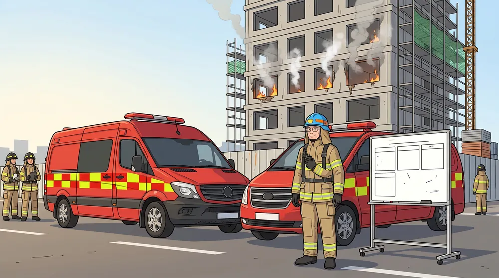
다들 다시 들어갔는데, 나는 여기서 물만…
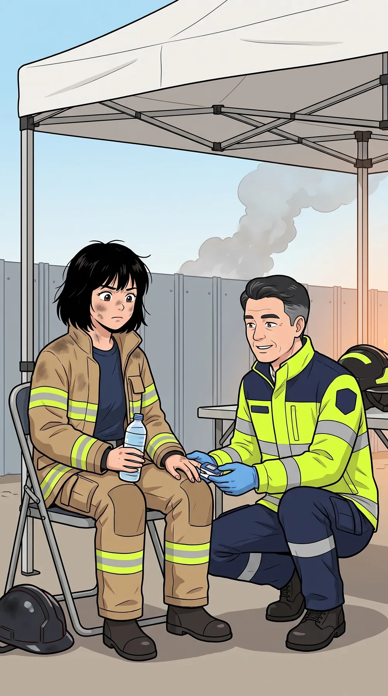
맥박 괜찮네. 쉬는 것도 임무야.
지휘대장, 여기 상황실. 지휘대장은 현 시간 대응활동계획을 작성하고, 재난안전통신망으로 사진 전송 바람.
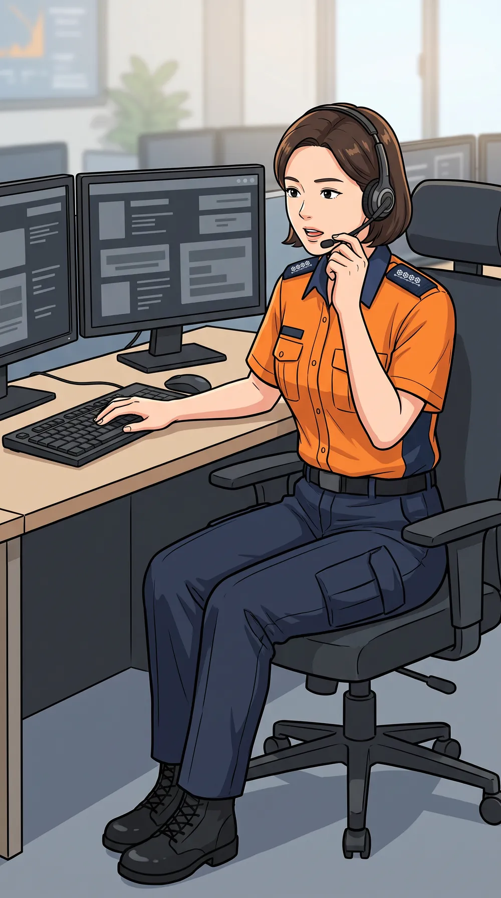
지휘대장 수신. 작성 후 전송하겠음.
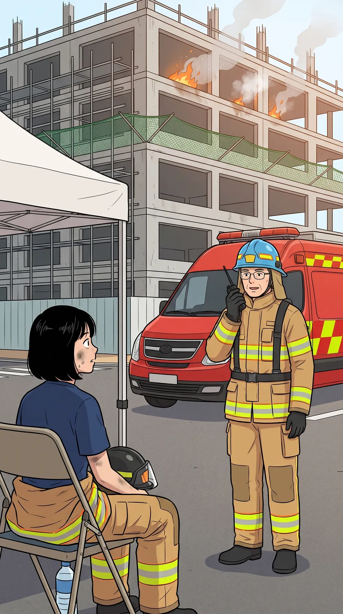
불이 아직 다 안 꺼졌는데… 글씨부터?
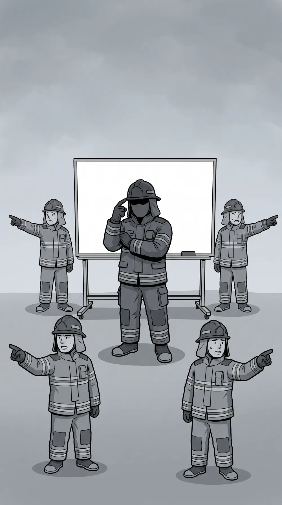
✕ 잘못된 예 — 머릿속 계획은 아무도 볼 수 없다. 단위지휘관도, 기관도 저마다 다른 그림을 그린다.
계획은 내 머릿속에 다 있어. 쓸 시간에 불을 끄지.
복잡·대형·장시간 화재, 여러 기관이 참여하는 현장의 대응활동계획은 서면으로. 전술상황판에 쓴다.
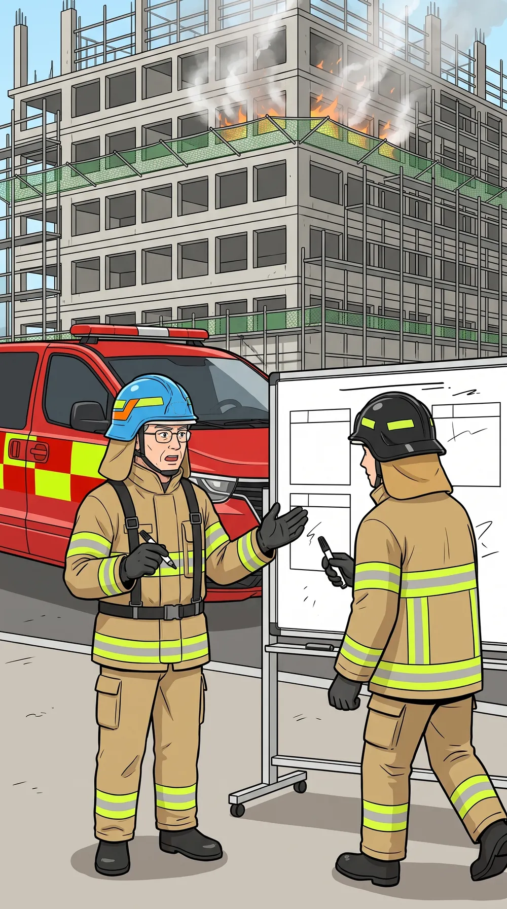
복잡하고, 오래 가고, 여러 기관이 붙었다. 이런 현장은 써야 한다. 모두가 같은 판을 보게.
대응활동계획 다섯 칸: 상황평가 · 지휘목표 · 전략 · 전술계획 · 동원자원. 원문은 작전도, 임무표, 지휘조직표, 응급의료계획, 통신계획, 시간대별 활동까지 아홉 가지를 판에 담으라 한다.
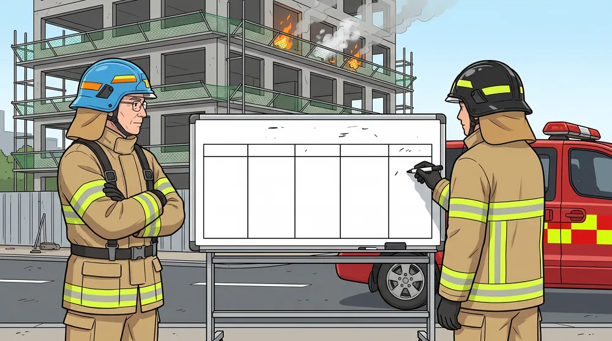
목표는 전술적 우선순위대로 적는다.
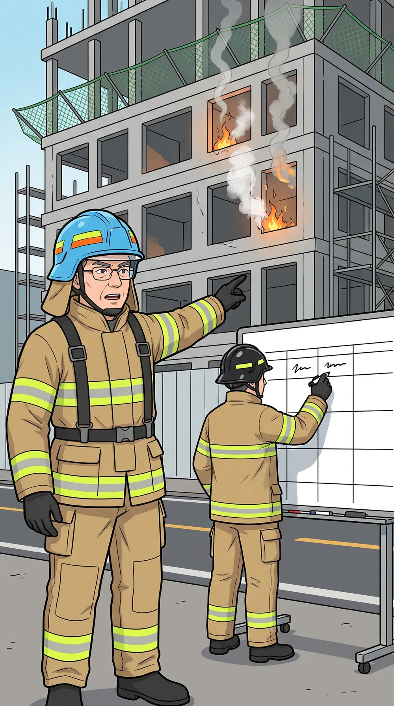
상황평가. 4층 화점, 5층 연소확대. 4층 내부 폭발로 방어 전환, 화세 감소로 공격 재전환. 대원 1명 경상.
지휘목표. 대원안전, 인명구조, 연소확대 차단 순.
"이 계획이 틀리면?" 대안을 함께 적어 둔다.
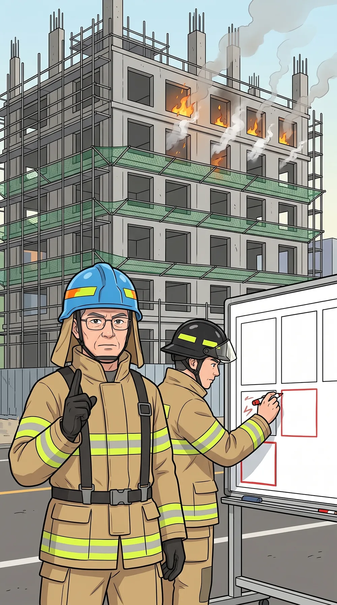
전략, 공격. 예비방안 — 붕괴 징후가 보이면 방어 전환, 전원 철수 신호.
전술계획. 4층 단위 진압1대장, 5층 단위 진압3대장, RIT는 진압4대 직전대기, 임시의료소 고기석 소방위. 동원자원, 소방차 17대, 대원 58명.
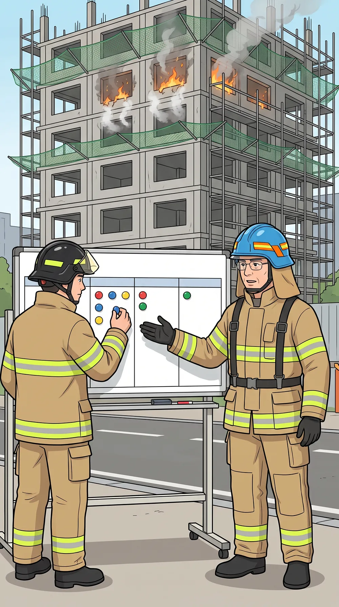
판 한 장이 현장과 상황실을 같은 그림으로 묶는다. 이제 사람을 모은다.
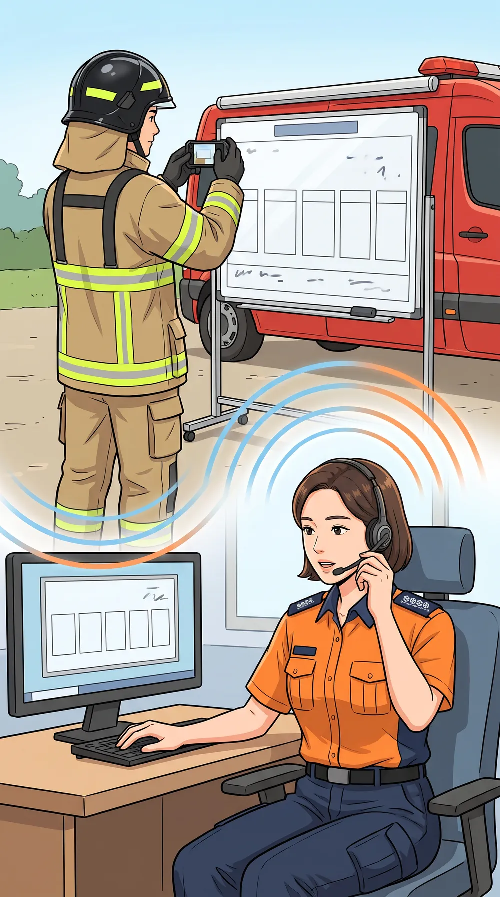
상황실, 대응활동계획 사진 수신. 현 시간 지휘대장이 상황판단회의를 개최하니 유관기관은 현장지휘소로 집결 바람.
지금부터 상황판단회의 실시하겠습니다. 가람소방서 현장지휘관 정종인입니다. 먼저 유관기관 참석 여부 확인하겠습니다. 시청, 경찰, 한전, 가스.
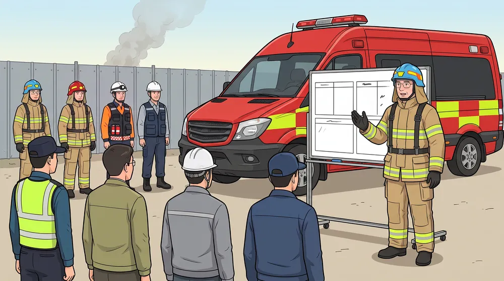
회의는 지휘관의 설명으로 연다. 상황판과 작전도로, 쉽게.
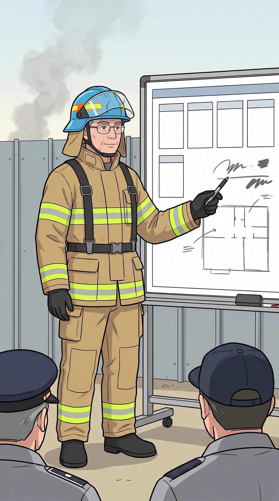
현재 상황입니다. 4층에서 시작해 5층까지 번졌고, 4층 내부 폭발 뒤 지금은 다시 내부 진압 중입니다. 작전도로 보시죠.
단위지휘관의 진행경과 보고: 현장 상황, 지시를 어디까지 했는지, 아직 모르는 것.
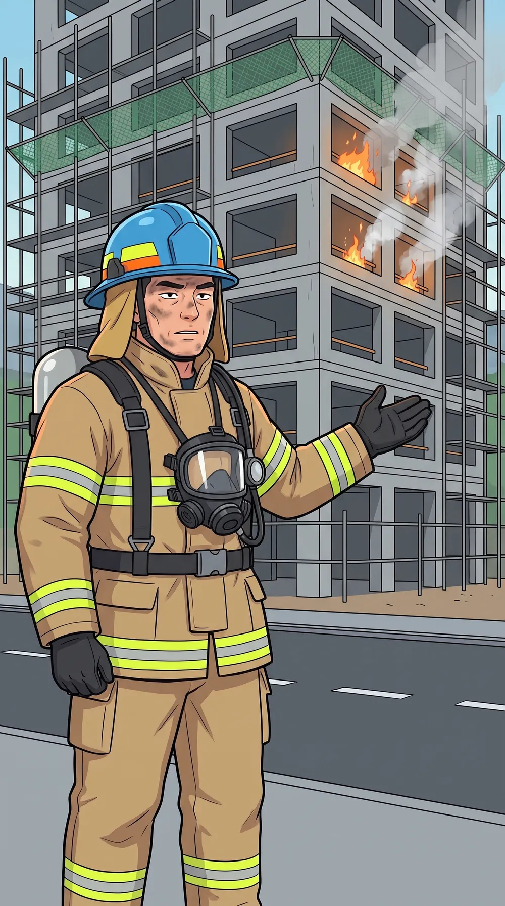
4층 단위입니다. 화세 줄고 있습니다. 4층 내부 진압은 지시대로 진행 중, 5층 계단실 쪽 검색은 아직 못 했습니다.
구조1대입니다. C면 6층 작업자 2명 구조 완료. 4·5층 인명검색은 폭발로 중단됐다가 재개했습니다. RIT는 진압4대가 이어받아 직전대기 중입니다.
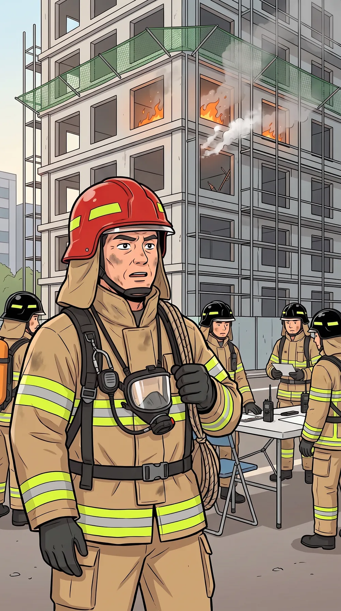
임시의료소입니다. C면 6층에서 구조된 작업자 2명, 연기 흡입 경상으로 병원 이송 완료. 부상 대원 1명도 처치 후 병원 이송했습니다.
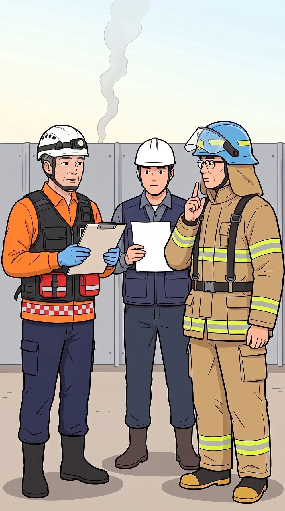
작업자 명단 14명, 전원 연락 닿았습니다.
명단 밖 인원이 있을 수 있습니다. 2차 검색까지 끝나야 확인입니다.
기관마다 할 일을 그 자리에서 정하고, 겹치거나 빈 곳을 조정한다.
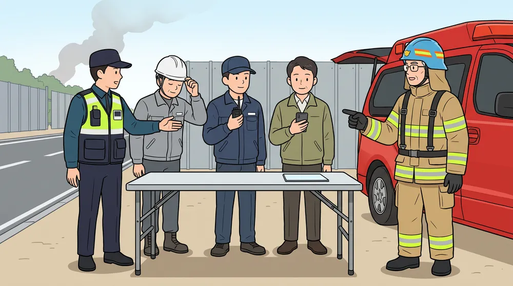
주도로 교통 통제, 통제선 유지하겠습니다.
공사장 임시 전력 차단했습니다.
현장 가스 공급 차단 확인했습니다.
인근 주민께 안내 문자 보내겠습니다.
회의는 분명한 결과와 기관별 임무로 끝나고, 대응활동계획을 고친다.
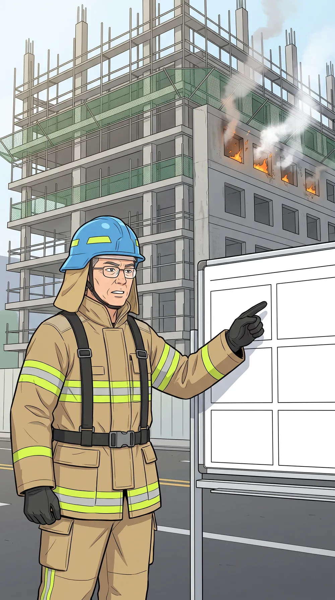
회의 결과입니다. 목표는 그대로, 5층 계단실 인명검색을 먼저. 경찰은 통제선 유지, 시청은 주민 안내. 오늘 결과는 계획에 반영해 다시 전송합니다.
가급적 재난 발생 2시간 안에 1차 브리핑. 정보가 비면 추측이 채운다. 단, 브리핑이 지휘를 막아서는 안 된다.
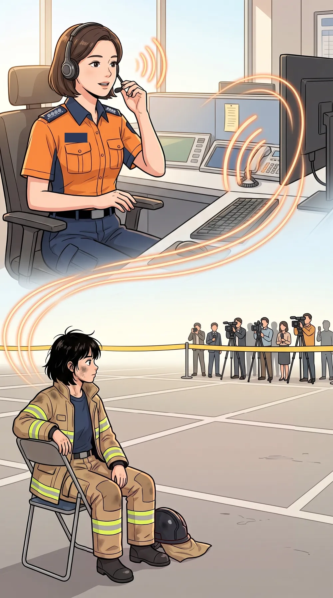
현 시간 지휘대장이 언론브리핑을 현장지휘소에서 실시하니 언론, 기자 및 유관기관은 현장지휘소로 집결 바람.
통제선 밖에… 카메라가 저렇게 많았구나.
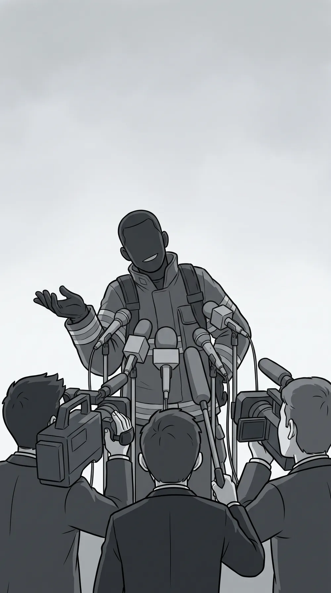
✕ 잘못된 예 — 원인 단정, 소방대원 정보, 개인 의견. 모두 하면 안 되는 말이다.
폭발은 아마 공사 자재 때문인 것 같고요, 다친 소방관은 진압3대 소속인데 발목을 다쳤습니다. 솔직히 현장 관리가 엉망이었죠.
브리핑은 순서대로: 누가 말하는지, 위로, 개요.
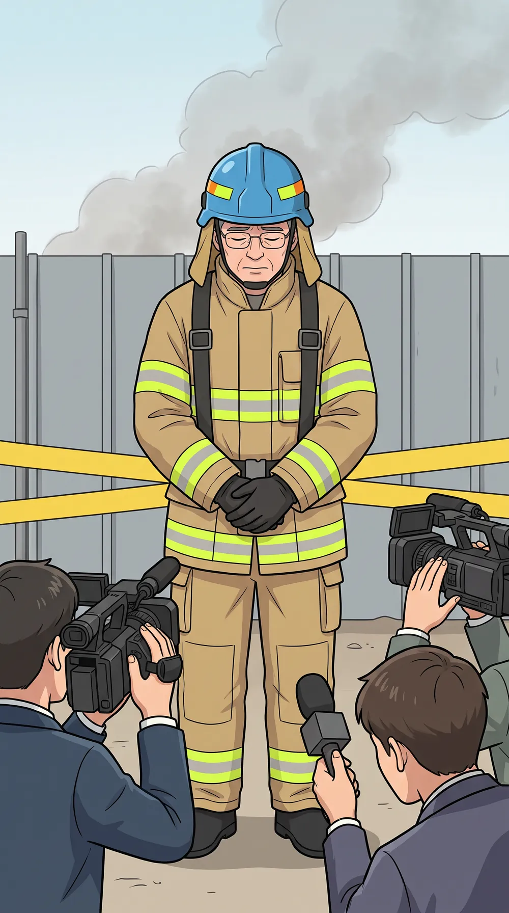
안녕하십니까. 저는 현장지휘관 가람소방서 정종인입니다. 먼저 이번 화재로 다치신 분들과 가족분들께 깊은 위로의 말씀을 드립니다. 오늘 14시 12분경, 가람구 한솔아파트 신축공사현장 A동 4층 화재 신고가 접수되었습니다.
확인된 사실만, 기준 시각과 함께, 바뀔 수 있다는 말까지.
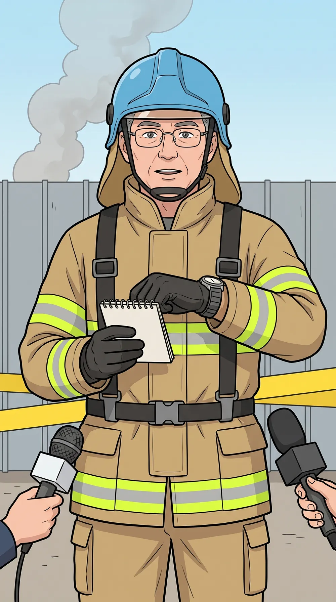
현재 15시 30분 기준, 작업자 2명이 구조되어 병원으로 이송되었으며, 변동 가능성이 있음을 말씀드립니다. 현재 소방차 17대, 대원 58명이 진화와 구조 활동을 하고 있습니다.
불을 끄는 손 뒤에서, 지휘는 쓰고, 모으고, 알리며 현장을 붙들고 있었다.
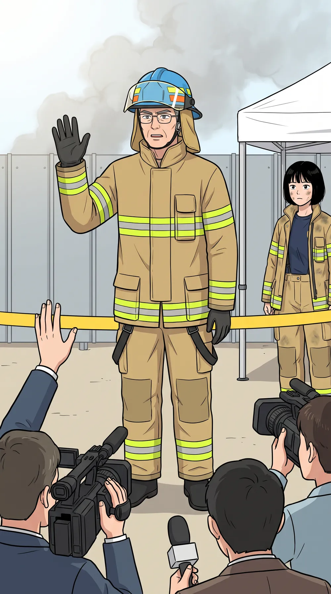
폭발이 있었다던데 원인이 뭡니까? 소방관도 다쳤다면서요?
화재 원인은 현재 조사 중입니다. 소방대원 관련 정보는 제공할 수 없습니다. 교통 통제는 경찰에서 직접 답변드리겠습니다. 다음 브리핑은 16시 30분, 이곳에서 실시할 예정입니다.
핵심 포인트
- 복잡·대형·장시간·여러 기관 현장의 대응활동계획은 서면(전술상황판)으로, 대안까지SOP 106 3.3 · 4.3
- 상황판단회의: 개최 → 참석 확인 → 현재 상황 → 보고·기관별 협의 → 결과로 계획 수정교육자료 p.19 · p.37
- 언론 브리핑: 가급적 2시간 안에, 사실만 — 원인 확정·사상자 개인정보·소방대원 정보 금지, 다음 브리핑 공지SOP 110 1.2 · 2.1 · 3.1
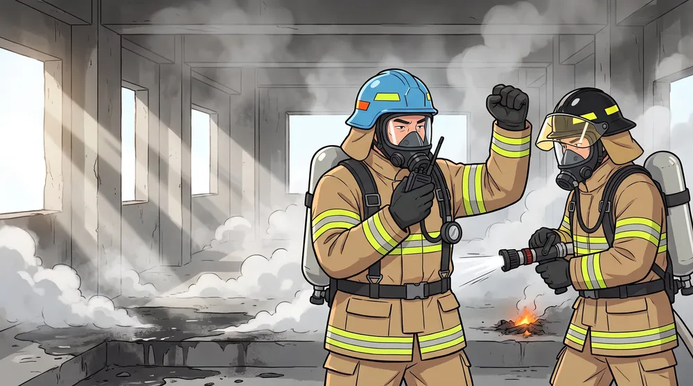
다음 화 — 「완진은 확인이다」. →
"4층, 현 시간 초진!" 불이 잡혔다는 말과, 불이 꺼졌다는 확인 사이.
"4층, 현 시간 초진!" 불이 잡혔다는 말과, 불이 꺼졌다는 확인 사이.
근거: SOP100-113 지휘통제절차 해설(2025.12. 개정판) · 교육용 전 12화만든이: 부산지휘역량강화센터(정종인,서종근,주강호,신태선,고기석,이도경)
 ×
×